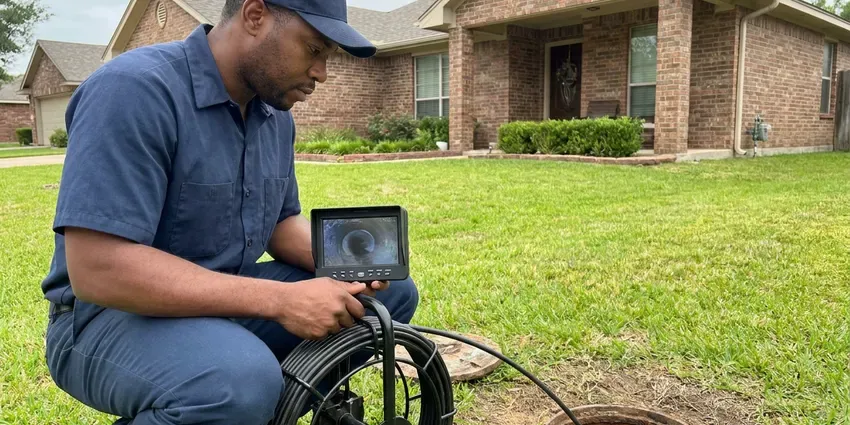

Walls Waterproofing in Burnsville, MN
Dry basements and crawl spaces start with sealed walls and working drains. Our Burnsville, MN crews install both.
- Quick Leak Tracing
- Sump Pump Installs
- Kerdi, RedGard and Hydro Ban Membranes
- Licensed Plumbers on Every Job

Get Your Foundation Sealed in Burnsville, MN.
We bring the meters, the injection gear and the membrane products to get the wall sealed.
Durable Waterproofing for Showers, Block and Foundations in Burnsville, MN
CNV Plumbing has sealed walls in Burnsville, MN that leaked only in spring, only after a storm, or every single day. Water heaters and boilers work hard through the heating season, which adds wear compared to milder climates. We read the pattern before we pick a product, since a wall that leaks after rain needs drainage while a wall that stays damp all year often has a plumbing leak in it. Timing tells us a lot.
Our expertise includes:
- Crawl space vapor barrier installation
- French drains and downspout routing
- Crack injection with epoxy or polyurethane

Additional Plumbing Maintenance Services in Burnsville, MN
Our maintenance and specialty plumbing services in Burnsville, MN protect your home year-round and extend the life of every system.


Customers
Why Choose CNV Plumbing for Walls Waterproofing in Burnsville, MN?
Wet foundation walls cost more every season they stay wet. Moisture wicks up into the sill plate, rusts the anchor bolts and gives mold a home on the joists, and the repair bill grows with it. A sealed wall stops that cycle.
- Source First, We fix the plumbing or drainage problem before any waterproofing goes on.
- Rated Membranes, We install manufacturer-approved systems listed for showers and wet walls.
- Lasting Repairs, Injection resins and elastomeric coatings hold up for decades when the wall is prepped right.
Citywide Coverage
Every neighborhood in Burnsville is in our service area, from the older streets near downtown all the way to the newest subdivisions. Basements, crawl spaces and slab homes all get the same inspection. You get the same crew and process.
Experienced Team
Each tech carries a pin meter, a pinless meter and a thermal camera, and knows how to read them on block, drywall and wood framing without false alarms from cold spots. Reading meters takes practice. They have had plenty of it.
Safety-First Approach
Shower waterproofing follows plumbing code and the manufacturer's rules for slope, curb height and drain connections. We flood test every pan for 24 hours before the tile setter starts, and we photograph the water line at the start and the end of the test. A failed test means we start over.
Trusted Certified Burnsville Plumbing Services Professionals
At CNV Plumbing, we take pride in licensed, certified plumbing services throughout Burnsville, MN. Those papers on the wall mean something. Every repair, install and maintenance visit follows strict safety and quality rules, and the plumbers doing the work carry recognized industry credentials.
Call Us Now PHCC Plumbing Contractor Recognition
PHCC Plumbing Contractor Recognition Better Business Bureau (BBB) Accreditation
Better Business Bureau (BBB) Accreditation Angi Certified Pro
Angi Certified Pro ISO 9001 Quality Management Certification
ISO 9001 Quality Management CertificationFoundation, Shower and Block Wall Sealing in Burnsville, MN
Foundation Crack Repair & Sealing in Burnsville
Hairline cracks in poured concrete walls leak more water than their size suggests. We inject them with low-pressure polyurethane foam, which expands to fill the crack from the inside face to the soil side, or with epoxy when the crack also needs structural bonding. Horizontal cracks are different. They can mean the wall is bowing from soil pressure, so we check for movement with a level before we seal anything. Most vertical cracks get sealed in one visit.

Shower Pan Leak Repair and Waterproofing in Burnsville, MN
Wet baseboards outside the shower or a stain on the ceiling below usually point to the pan. We plug the drain, fill the pan with an inch or two of water, and mark the level and wait 24 hours. A drop means a leak. Rebuilding means a mortar pre-slope of a quarter inch per foot, a new PVC liner or bonded membrane, and a two-piece clamping drain set on the liner. We flood test the new pan before any tile goes down.
Exterior Foundation Waterproofing in Burnsville
Exterior waterproofing means digging down to the footing and coating the outside of the wall. It is the most dependable way to stop a basement leak, because the water never touches the block or concrete. We apply a rubberized asphalt or polymer membrane, add a dimple board to protect it, and set perforated drain pipe in gravel along the footing to carry the water away from the wall. Glacial clay and sandy soils are both common in Minnesota, and deep frost causes the ground to heave and settle each year. Backfill goes in last.
Crawl Space Vapor Barriers in Burnsville
Bare dirt in a crawl space releases gallons of water vapor a day into the air under your floor. A 10 mil or heavier polyethylene barrier, overlapped a foot at every seam and taped, cuts that off and keeps the joists and subfloor dry. We run it up the foundation walls and hold it in place with termination strip. Cheap fix, big difference.
Crawl Space Encapsulation in Burnsville
Encapsulation seals the whole crawl space, walls and floor, with a reinforced poly liner. We run 12 to 20 mil liner up the walls, tape every seam, seal around piers and pipe penetrations, and usually add a dehumidifier to hold humidity under 60 percent. Water heaters and boilers run long hours through the heating season, which adds wear compared to milder climates. The joists stop rotting. Drier air under the floor also means less musty air upstairs.
Interior Walls Waterproofing in Burnsville, MN
Interior drain tile handles water that already got through the wall. We cut a channel in the slab along the perimeter, lay perforated pipe in washed stone, and tie it into a sump pit so the pump can push the water outside. The wall still gets wet. It just stops puddling on your floor. This route costs less than digging outside and works where a driveway or deck blocks the wall.
Plumbing Leak Behind Walls in Burnsville
A drip from a shower valve cartridge, a sweated copper stub or a loose drain slip nut can soak a wall cavity for months before paint bubbles. We find it with a moisture meter, a thermal camera that picks up the cooler wet area, and a pressure test on the supply lines. Then we cut a clean access hole. We replace the leaking fitting or pipe section. Wet insulation comes out, and fans dry the cavity before we close it up.

Below-Grade and Basement Wall Waterproofing in Burnsville
Older homes in Minnesota often still have galvanized supply pipe and cast iron drains, both of which corrode and clog with age. Any wall below grade sits in soil that gets saturated after heavy rain or snowmelt, and that water pushes against the wall with steady hydrostatic pressure. We inject cracks, coat the wall inside or out, and add drain tile wherever water collects at the footing. A sump goes in if groundwater sits high. Not every basement needs one.
Local Wall Waterproofing in Burnsville, MN
Homes around Burnsville share a handful of common builds, from slab-on-grade ranches to block crawl spaces and full basements. Each one has its usual leak points, and knowing them helps us find the water source on the first pass instead of opening walls to look. Warranty calls are easy for us to get to.
Our techs have worked in the basements and crawl spaces of Burnsville for years, so they know which house styles tend to leak where. A split-level with a half-buried family room fails differently than a full basement with poured walls. Knowing that history makes the diagnosis faster.
CNV Plumbing at a Glance
- Licensed and insured plumbers serving Burnsville, MN
- Same-day appointments and 24/7 emergency response
- Upfront, flat-rate pricing before work begins
- 4.8-star rated by 501+ Minnesota customers
Burnsville Map
Burnsville Information
- Population
- 64,772
- Area codes
- 612/507/320
- Service area
- Burnsville and communities within 40 miles
- Nearby
- Apple Valley, Bloomington, Lakeville, Eagan
Sprinklers, storms and daily showers all push water into block, stucco and drywall, so Burnsville, MN homes need walls sealed where the water gets in.
Talk to a Plumber
Call CNV Plumbing for honest, reliable plumbing from people who know the trade in Burnsville, MN.
Our Specialized Plumbing Services in Burnsville, MN
At CNV Plumbing, we handle the full list of plumbing services across Burnsville, MN. We go from leak detection all the way to full system installations, for homes and commercial buildings, and we do it quickly at a fair price. Take a look at our core services below:


How a Wall Waterproofing Job Goes in Burnsville, MN
Every job starts with finding the water and ends with a sealed wall that has been tested.
Request a Quote
Call (612) 712-9569 to set up an inspection. We walk the foundation and check for cracks, and we ask when the water shows up.
Thorough Inspection
We check every wall for cracks, efflorescence and bowing, and then check the grading and downspouts. That tells us where the water comes from.
Custom Plan
You get a written plan, which may call for crack injection, drain tile, an exterior membrane or some mix of them.
Frequently Asked Questions About Walls Waterproofing in Burnsville
Most jobs fall between $3,000 for interior crack sealing and $15,000 or more for exterior excavation with new footing drains. The size of the wall, how wet it gets, the method we pick and how easy the wall is to reach all move the number. Access matters most. Nothing starts until you have the quote in writing.
Most systems we install should go 20 to 30 years or longer. Life span comes down to how it was installed, what method was used and what the soil around the house is like. Sump pumps wear out sooner. Plan on a new pump every seven to ten years.
Often, but not always. A remodel that moves the valve, changes the drain location or alters supply piping usually needs a permit, but swapping a failed membrane on the same layout might not. We look up your local requirements and get the permit if one is required.
Yes, a lot. Stopping liquid water at the wall brings the humidity in the basement down, and pairing it with a dehumidifier set around 50 percent keeps the air dry enough that mold and mildew have a hard time growing on stored boxes and framing. The musty smell tends to fade within a few weeks.
Xypex, Tremco, Sika and Henry products show up on a lot of our jobs, from crystalline admixtures to elastomeric membranes and sealants. The product depends on the wall. Crystalline coatings work well on poured concrete, but block walls usually call for an elastomeric membrane or drainage board.
Bubbling paint is a big one. Soft drywall near the floor, stained baseboards, a musty smell and a chalky white crust on block or stucco all point to moisture, and in a shower, loose tiles or cracked grout usually mean water is already behind the wall. We can confirm it with a meter in a few minutes.
Interior systems manage water after it has come through the wall, using drain tile under the slab edge and a sump pump. Exterior waterproofing stops water before it reaches the wall, which means digging down to the footing and applying a membrane to the outside face. Outside costs more.
It depends on the wall and the site. On exterior foundation work we use liquid polyurethane-modified asphalt, rubberized asphalt sheets, bentonite panels and crystalline coatings, picking the one that suits the soil and the wall material. Inside showers, it is Kerdi, RedGard or Hydro Ban.
What People Are Saying About Our Plumbing Experts?

Emily R.
The shutoff valve under our kitchen sink snapped off in my hand on a Sunday morning. CNV Plumbing had someone out by early afternoon. He replaced both angle stops with quarter turn valves and showed me where our main shutoff was, which I honestly did not know.
Plumbing Repair · Bloomington, MN
Angela D.
Our sump pump quit during a storm and the water was an inch from the basement carpet. CNV Plumbing put in a new pump with a battery backup that same evening. We have had two heavy rains since. It kicked on both times.
Sump Pump · Edina, MN
Nathan E.
Our tankless heater kept throwing an error code and shutting off mid shower. The tech flushed the heat exchanger, which was full of scale, and replaced a bad flow sensor. Hot water has been steady for half a year now.
Water Heater Repair · Apple Valley, MNPatricia H.
We had a slab leak that two other companies could not find. CNV Plumbing located it in under an hour with a listening device. They rerouted the line through the attic instead of breaking up the floor, so we kept our kitchen tile.
Slab Leak Repair · Bloomington, MN
Greg S.
I manage a small strip center with six tenants. CNV Plumbing handles our annual backflow testing and fixed a recurring clog in the shared sewer line that had been backing into the nail salon. Their reports come in clean and on time.
Commercial Plumbing · Eden Prairie, MNPaul B.
Our pit pump ran nonstop even in dry weather. The plumber found the check valve was stuck open, so the same water kept cycling back into the pit. New valve, new float switch, done in an hour. It runs quiet now.
Sump Pump · Edina, MN